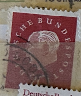
| SOURCE | TITLE| IMAGE MATCH | click to source page |
| Amazon.com | Amazon.com: FRD (FR.Germany) 304 eckrandstück unmounted Mint/Never hinged ** MNH 1959 Heuss (Stamps for Collectors) : Toys & Games | 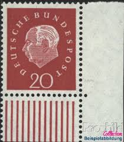 |
| Colnect | Stamp: Prof. Dr. Theodor Heuss (1884-1963), 1st German President (Germany, Federal Republic(Federal President Theodor Heuss) Mi:DE 304,Sn:DE 795,Yt:DE 175,Sg:DE 1221,AFA:DE 1273,Un:DE 175 📮 | 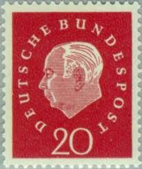 |
| eBay | West Germany - 1959 - Professor Dr. Th. Heuss - 20Pfg - Used - #03 | eBay | 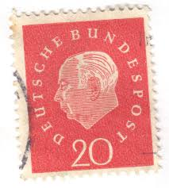 |
| Poppe Stamps | Poppe Stamps: German Federal Republic, 1959, 1221, Numbers - Values And Letters - Characters, Personalities, Numbers - Values And Letters - Characters, Personalities - stamps for sale by theme and country | 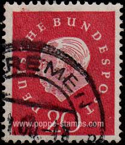 |
| sellosmundo.com | Sello: 2412 Automóviles antiguos españoles. Abadal. 7 ptas. multicolorde Espa a Europa | 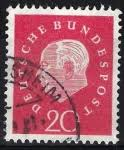 |
| Shutterstock | Germany Circa 1959 Postage Stamp Printed Stock Photo 339255281 | Shutterstock | 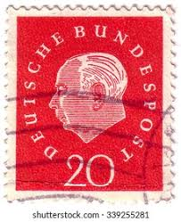 |
| eBay | Deutsche Bundespost Stamp 20 dm Theodor Heuss 1959/1957 40 Pfg Stamp Used-#5835 | eBay | 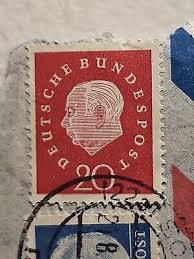 |
| Alamy | West Germany Postage Stamp - Prof. Dr. Theodor Heuss (1884-1963), 1st German President Stock Photo - Alamy |  |
| Alamy | Theodor Heuss, the first president of West Germany from 1949 to 1959. Postage stamp issued in Federal Republic of Germany (West Germany) in 1954 Stock Photo - Alamy | 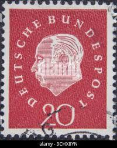 |
| HipStamp | Germany 795 used SCV $ 0.20 | Europe - Germany & Colonies - Germany, General Issue Stamp / HipStamp | 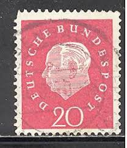 |
| Alamy | Postage stamp from the Federal Republic of Germany in the Federal President Theodor Heuss series issued in 1959 Stock Photo - Alamy | 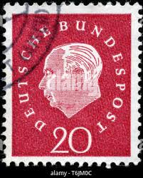 |
| Poppe Stamps | Poppe Stamps: German Federal Republic, 1959, 1221, Numbers - Values And Letters - Characters, Personalities, Numbers - Values And Letters - Characters, Personalities - stamps for sale by theme and country |  |
| Dreamstime.com | Isolated German Stamp editorial stock photo. Image of historic - 381448723 | 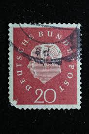 |
| Shutterstock | World First Stamp: Over 865 Royalty-Free Licensable Stock Photos | Shutterstock |  |
| Dreamstime.com | Prof Dr Theodor Heuss Stock Photos - Free & Royalty-Free Stock Photos from Dreamstime | 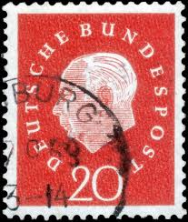 |
| Dreamstime | Cancelled Postage Stamp Printed Germany Danzig Shows Coat Arms Stock Photos - Free & Royalty-Free Stock Photos from Dreamstime |  |
| Dreamstime.com | The Theodor-Heuss-Bridge in Duesseldorf, Germany Stock Photo - Image of beautiful, city: 119663534 | 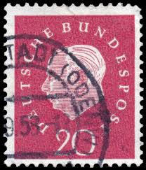 |
| iStock | Denmark Postage Stamps Stock Photo - Download Image Now - Antique, Baltic Countries, Black Background - iStock | 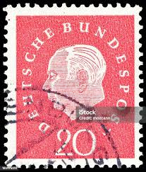 |
| Etsy | Buy Vintage 1960 Düsseldorf Postcard – Königsallee (king's Avenue), Germany Online in India - Etsy |  |
| Flickr | Flickr All Stars*! | Flickr | 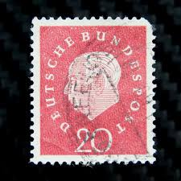 |
| eBay | Germany RFA BRD Stamp 175, Celebrity, Canceled, VF Stamp | eBay | 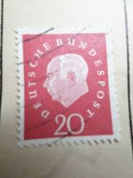 |
| eBay | 1959, Bundesrepublik Deutschland, 304 FL, gest. - 1614883 | eBay | 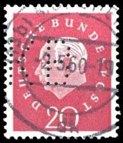 |
| Amazon.co.uk | Prophila Collection Berlin (West) 184wP horizontal Couple unmounted mint/never hinged ** MNH 1959 Heuss (Stamps for collectors) : Amazon.co.uk: Toys & Games |  |
| eBay | Germany Stamp Theodor Heuss 20pf Used 795 Circular Cancel | eBay |  |
| eBay | WEST GERMANY # 795 MNH PRESIDENT THEODOR HUESS | eBay | 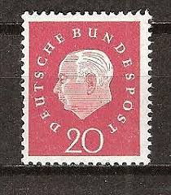 |
| Dreamstime.com | 639 German Professor Stock Photos - Free & Royalty-Free Stock Photos from Dreamstime |  |
| Dreamstime.com | Politicians Serie Stock Photos - Free & Royalty-Free Stock Photos from Dreamstime |  |
| eBay | GERMANY ~ Deuirches Reich ~ Stamp 20 Heller/Tax Stamp 2 ~ Posted ~ 1948 ~ P33 | eBay | 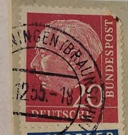 |
| Etsy | 1959 GERMANY Heuss Deutsche Bundespost Stamp 20pf Vintage Postage Stamp - Etsy Australia | 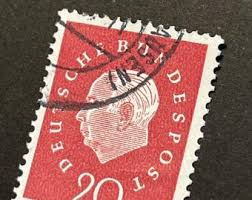 |
| eBay | AOP Germany #795 1959 20pf horizontal pair used | eBay | 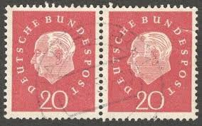 |
| eBay | Stamp Lot Germany: Heuss Deutsche Bundespost 10, 20 Cordier Style STAMPS 1959 | eBay | 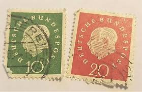 |
| eBay | Deutsche Bundespost Stamp 20 dm Theodor Heuss 1959/1957 40 Pfg Stamp Used-#5835 | eBay | 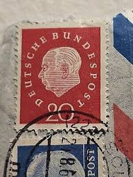 |
| Alamy | Gotonysmith deutsche,bundespost,20,red,theodor,heuss,1959 hi-res stock photography and images - Alamy | 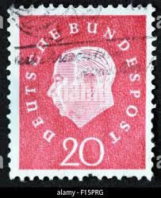 |
| Shutterstock | Italy Circa 1923 Cancelled Postage Stamp Stock Photo 1867413646 | Shutterstock | 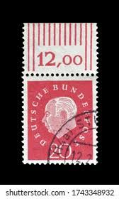 |
| eBay | Foreign Stamp 20c Deutsche Used - # 6718 | eBay | 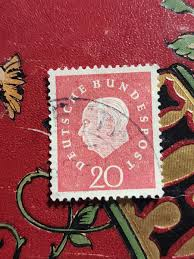 |
| Etsy | 1959 NIEMCY Heuss Deutsche Bundespost znaczek 20pf Vintage znaczek pocztowy - Etsy Polska | 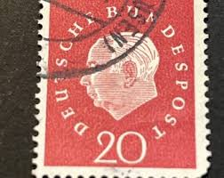 |
| eBay | Germany BRD Bundes Heuss Polizei POL Lochung Police Perfin Official Stamp 60952 | eBay | 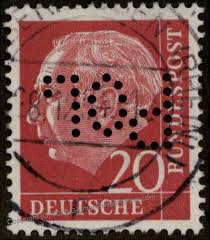 |
| ebid.net | Germany 1959 - SGB180 - 20pf red - President Heuss - used on eBid United Kingdom | 235660006 | 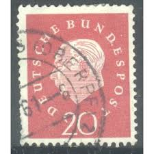 |
| Etsy | 1959 GERMANY Heuss Deutsche Bundespost Stamp 20pf Vintage Postage Stamp - Etsy | 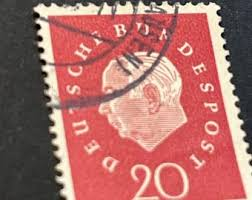 |
| eBay | German German & Colonies Red 1951-1960 Year of Issue Stamps | eBay |  |
| Etsy | Deutsche Bundespost - Etsy Hong Kong | 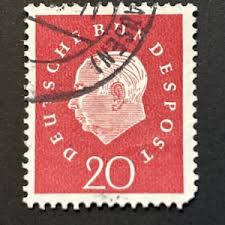 |
| Etsy | Germany Stamp Set Heuss 1954 to 1959 - Etsy Canada |  |
| Todocolección | 1869 alemania wurttemberg - Buy Antique stamps of Germany on todocoleccion | 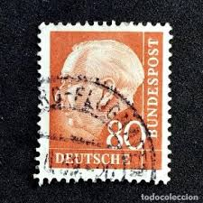 |
| eBay | Berlin #Mi184v MNH 1959 Prof Dr Theodor Heuss [Ribbed Gum Pair][9N167] | eBay | 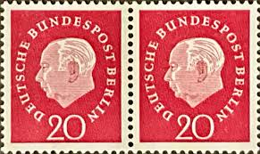 |
| eBay | Germany Postage ~ Deutsche Bundespost ~ 20D Red Stamp ~ Posted/Used ~ 1954 ~ N61 | eBay | 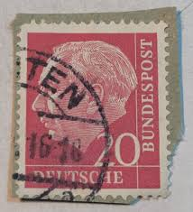 |
| eBay | Germany 1954-60 20pf PRESIDENT THEODOR HEUSS SC 710 MNH | eBay | 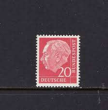 |
| Shutterstock | Commemorating German Postage Stamp: Over 4,326 Royalty-Free Licensable Stock Photos | Shutterstock | 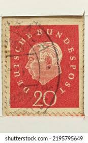 |
| Etsy | This item is unavailable - Etsy | 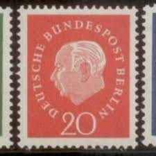 |
| eBay | Germany Postage ~ Deutsche Bundespost ~ 20D Red Stamp ~ Posted/Used ~ 1954 ~ 01 | eBay | 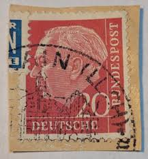 |
| Alamy | Postage stamp from the Federal Republic of Germany in the Federal President Theodor Heuss series issued in 1954 Stock Photo - Alamy | 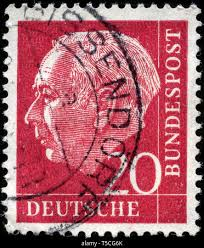 |
| eBay | GERMANY ~ Deutrche/Bundespost ~ 20 Saufend ~ Cancelled/Posted ~ c.1954 ~ P42 | eBay | 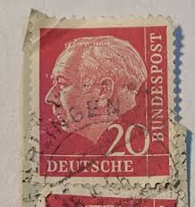 |
| eBay | Germany 1954 Professor Dr. T Huess 80Pfg (Opportunity) (Z2) | eBay | 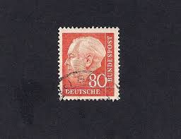 |
| ebid.net | Egypt stamps 1937 - SG 248 - Investiture of King Farouk 1 mills - used 2 on eBid New Zealand | 198388450 | 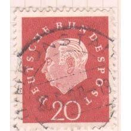 |
| eBay | Correia Stamps & Coins | Boutiques eBay | 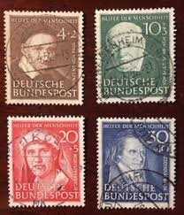 |
| eBay | THURINGEN SOVIET ZONE Mi. #97AX very nice stamp on cover! | eBay | 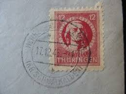 |
| eBay | GERMANY BRD 1954 5pf Paper with Fluorescence Mi. 179y Used Stamp A4P2F39497 | eBay | 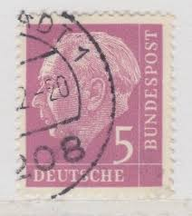 |
| Alamy | Postage stamp german germany post hi-res stock photography and images - Page 15 - Alamy | 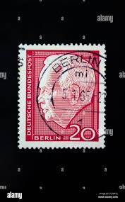 |
| eBay | FRG West Germany Stamp 1972 Jederzeit Sicherheit (Safety at all times) TKS124* | eBay | 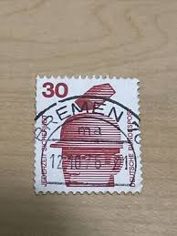 |
| Aukcijska Kuća Barac&Pervan | Barac&Pervan Auctions • Auction | 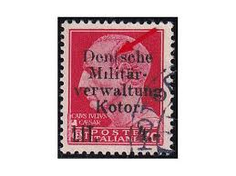 |
| eBay | 1954 German Postage Stamps Theodor Heuss 10 And 20 Marks Deutsche Bundespost | eBay | 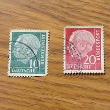 |